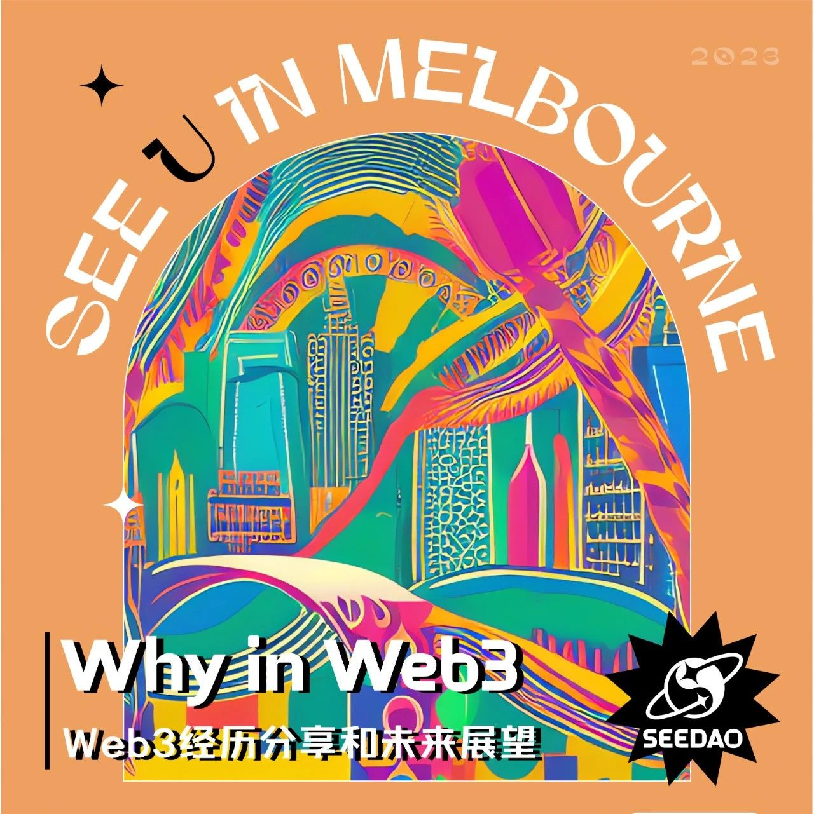

SeeDAO澳洲据点活动 -- 线上线下两弹连发
随着SeeDAO城市联络人如火如荼弹开展，澳洲据点将在下周开展线上+线下联合活动！！！

如果是的话，那么你一定不能错过SeeDAO在澳洲的线上和线下活动！线上活动将在3月19日举办Twitter Space，我们将深入探讨澳洲Web3领域的趋势，并分享在澳洲做Web3项目所需的关键要素。而在我们的3月19日的线下活动中，你将与一些Web3领域的资深从业者进行交流，听取他们分享Web3经历和未来展望，并有机会向他们提问。描述：澳洲Web3财富密码直通车！！！！！在澳洲做项目需要关注什么？澳洲的Web3趋势如何？在澳洲做Web3项目容易吗？我该怎么进入Web3？时间：03月24日3.24 18:00 (墨尔本当地时间) UTC-11地点：Level 4 Suite 3，350 Collins Street，Melbourne，3000活动主题：Why in Web3线下主题分享+AMA （Web3经历分享和未来展望）描述：这个线下活动将聚集一些Web3领域的资深从业者，他们将分享他们的Web3经历和未来展望，并回答参与者提出的问题。你将有机会与这些专业人士进行交流，向他们学习他们的经验和见解。这将是一个难得的机会，让你深入了解Web3行业和行业内的发展趋势。